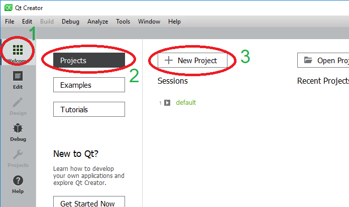
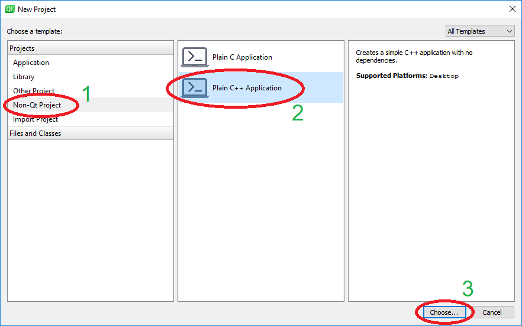
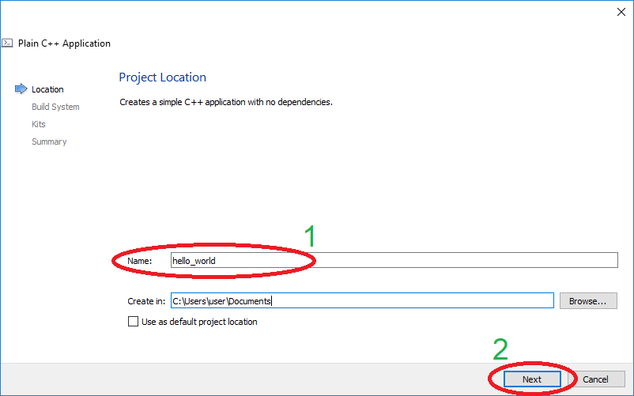
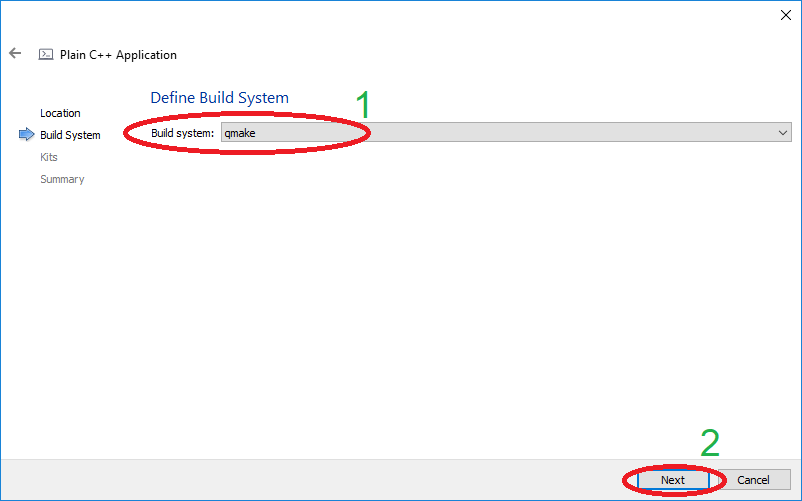
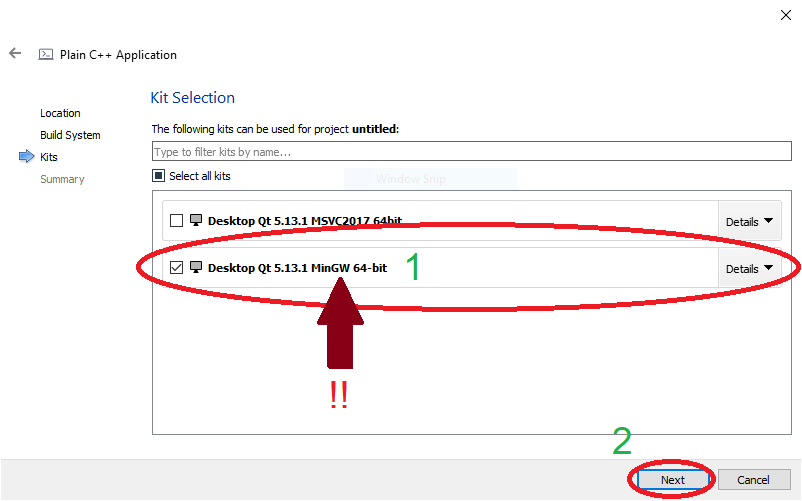
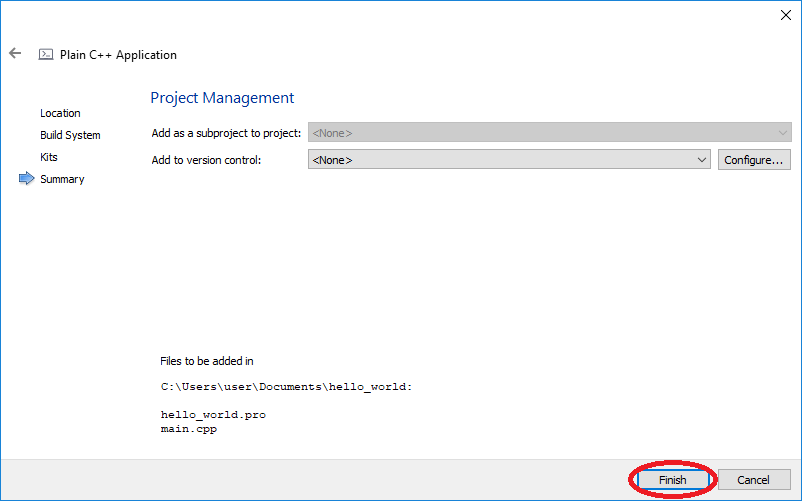

Lab 00 - Tworzenie nowego projektu
Lab 00 - Tworzenie nowego projektu
Tworzenie nowego projektu w Qt Creator dla C++
🛠🔥 Zadanie 🛠🔥
Utwórz projekt Qt Creator C++ korzystając z poniższej instrukcji
Otwórz, wybierz zakładkę Welcome(1), następni Projects(2) i New Project(3). Możesz także wybrać File → New File or Project...

W oknie New Project wybierz Non-Qt Project(1), następnie Plain C++ Application(2) i Choose(3):

Następnie musimy nazwać projekt (1) - hello_world w tym przypadku. Możesz także zmienić folder docelowy.
UWAGA: Nazwy projektów i lokalizacja NIE mogą korzystać ze znaków specjalnych (także polskich liter) i dodatkowych spacji (korzystaj z podkreślników). Wciśnij Next(2).

Następnie musimy wybrać Build System - jest to zestaw narzędzi odpowiedzialny za przygotowanie projektu do kompilacji. Korzystając z Qt najłatwiej korzystać z qmake. Upewnij się, że jest wybrany i wciśnij Next(2).

kolejne okno może się różnić na różnych komputerach. W tym kroku i będziemy wybierać kompilator i zestaw narzędzi, który zostanie wykorzystany w tworzonym projekcie. W czasie naszych zajęć będziemy korzystać z MinGW 64-bit. Upewnij się, że ten, i tylko ten, zestaw został wybrany, przez zaznaczenie pola na lewo od jego nazwy (1). W celu uniknięcia niezgodności, zalecamy w domu korzystanie także MinGW 64-bit. Wciśnij Next(2).

W ostatnim kroku wciśnij Finish.

Autorzy: Tomasz Mańkowski, Jakub Tomczyński